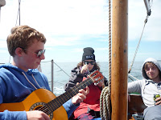
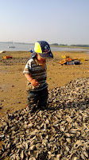
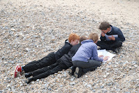
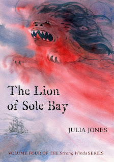
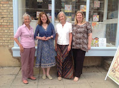
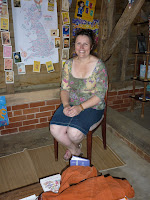

 |
| Too big |
{kind=link}
 |
| Too small |
{kind=link}
 |
| Exactly right! |
{kind=link}
The rejection and re-writing process
for those first three books was a slow one. Imperceptibly the
children in my life were growing up and the adult influences on my
work were becoming more dominant. By the time the books were finally
published I was haunted by the fear that no children would read them
at all. The handful of children of friends who were cajoled into
service in the final weeks of the ultimate edit were rare and blessed
creatures. I knew that they weren't 'representative': I was secretly
afraid that they were just 'being kind'.
In some ways it didn't matter –
ultimately I was writing the books for me and I was able to take
courage from Arthur Ransome (my Ghost in the Cabin) who stoutly
asserted that he wrote for his own enjoyment and if children
'overheard' his stories and enjoyed them – well, that was a bonus.
There's much more that could be said about the delicate balances
between writing for oneself and writing for the reader, writing to
communicate and to make a living and writing because a story
inexplicably demands to be written. It has also felt like a
gigantic compliment when adult readers have said that the stories
reminded them of adventures in their own childhood or that they
conveyed something about childhood today.
Be that as it may a children's story
must please children – or, at least some children. This
year, when story number four demanded to be written, I had no
children in my everyday life who were anywhere near the right age. I
didn't need them as domestic critics, I simply needed to be able to
think of them. Had I grown too old myself? This has in many ways been
an unusually quiet year, subtly blighted by ill-health (not mine) and
anxiety. So the first job was to take courage and write the story.
Then, miraculously, at the very moment when the first draft was done
and I needed to stand back and get ready to revise, a spate of
invitations arrived to work with year 5 & 6 children (ten and eleven year olds) in primary schools.
I wrote last year about the affirmative
friendship of the children and teachers at Kessingland Primary School
near Lowestoft and this year again we've had time to play and work
together. I've also been hired by the Essex Book Festival to help
children in some Essex primary schools to experience the fun of
writing their own adventure stories. It felt as if they did have fun.
They certainly took an interest in my work, as I did in theirs and
I'm indebted to them for their willingness to discuss one or two
aspects of the new story and volunteer suggestions for its title.
 |
| Strong Winds Vol 4 |
{kind=link}
What those children gave me, all of
them, readers and non-readers, was the sound of their voices
(invaluable for the final revision), the warmth of their interest
(never mind the literacy levels) and the freedom of their
imaginations (zombies, vampires, ponies and princesses). Thank you.
There's been so much more. I've met
Nikki Gamble of Just Imagine and Sarah Gallagher of the Story Shack.
I'm looking forward to the arrival of Writing Children's Fiction edited by Linda Newbery and Yvonne Coppard. I'm sure
all these expert adults will agree with my basic premise that if you need
creative inspiration, liberation and fun – JUST ADD CHILDREN.
 |
| KM Peyton, Linda Newbery, Yvonne Coppard Nikki Gamble at the Just Imagine Story Centre |
{kind=link}
 |
| Sarah Gallagher, ex-headteacher founder of the Story Shack, Suffolk |
{kind=link}